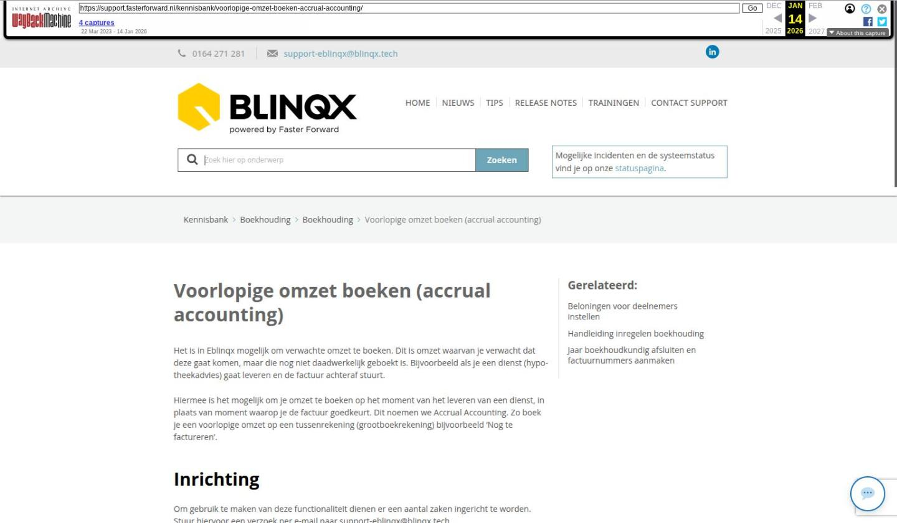

Voorlopige omzet boeken (accrual accounting)

Tekstinhoud
Voorlopige omzet boeken (accrual accounting)
Het is in Eblinqx mogelijk om verwachte omzet te boeken. Dit is omzet waarvan je verwacht dat deze gaat komen, maar die nog niet daadwerkelijk geboekt is. Bijvoorbeeld als je een dienst (hypotheekadvies) gaat leveren en de factuur achteraf stuurt.
Hiermee is het mogelijk om je omzet te boeken op het moment van het leveren van een dienst, in plaats van moment waarop je de factuur goedkeurt. Dit noemen we Accrual Accounting. Zo boek je een voorlopige omzet op een tussenrekening (grootboekrekening) bijvoorbeeld 'Nog te factureren'.
Inrichting
Om gebruik te maken van deze functionaliteit dienen er een aantal zaken ingericht te worden. Stuur hiervoor een verzoek per e-mail naar support-eblinqx@blinqx.tech
Zelf administraties inrichten
Indien je zelf de administraties onderhoudt, kun je hier de bijbehorende grootboekrekeningen inrichten. Indien je deze niet zelf onderhoudt, kan Blinqx dit voor jouw organisatie inrichten.
Bij onderhoud administraties geef je de grootboekrekeningen aan.
Wanneer je 'voorlopig' aanklikt komt er een regel bij om de grootboekrekening te selecteren voor voorlopige BTW.
Rekening courant deelnemer geef je aan onder het tabblad Standaard subadministratie instellingen.
Journaalposten aanmaken
Om voorlopige omzet te boeken, volg je de volgende stappen:
1. Je maakt alvast een journaalpost aan. Deze geeft aan dat er bijvoorbeeld €1500 omzet aankomt. Deze knop kan je vinden onder contracten en diensten – tabblad Boekingen
2. Je maakt een tegenboeking op een bestaande boeking (journaalpost) aan. Deze journaalpost is eerder aangemaakt, maar pas later boek je de definitieve omzet.
Laatste update: 15 oktober 2025
Was deze informatie nuttig?
Ja Nee